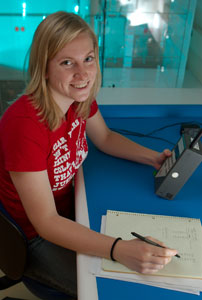

|  |
| REU Student Grace Elwell who built a clean room in Vuk Mandic's laboratory as a summer project. |
| photo by Alex Schumann |
Physics majors have the opportunity to work part-time for various research groups. This can help them identify a field of interest should they to decide to continue into graduate school. It can also help in building relationships with graduate students, postdocs and faculty.
There are five ways to get involved in physics research.